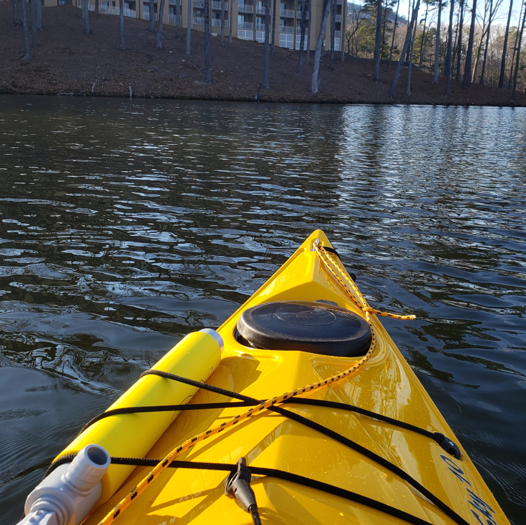
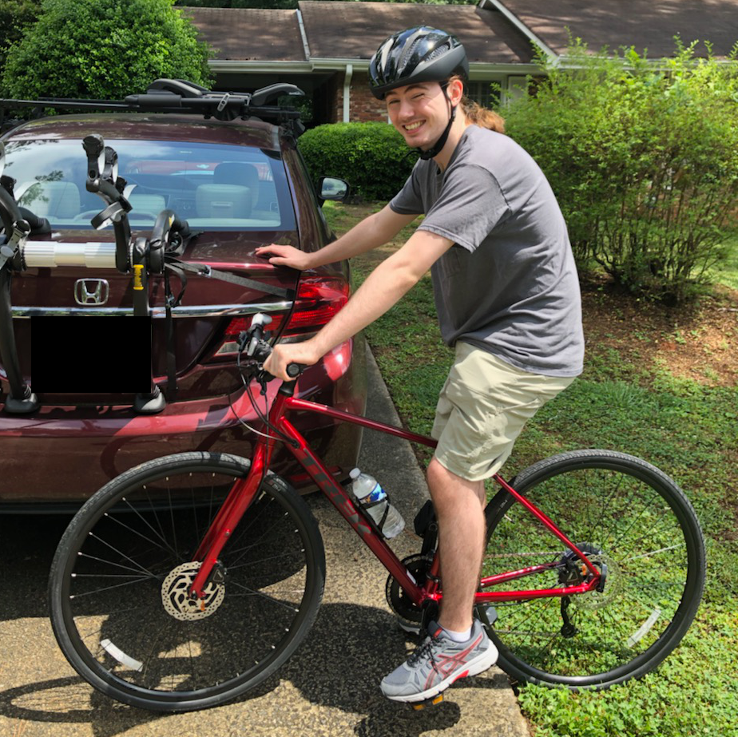
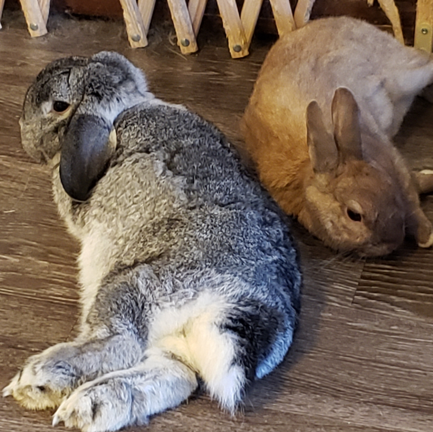

About Me, Luc Cole
I am a 22 year old programmer going through the Fullstack bootcamp so I can become a professional and get a job in a great career. I do other things as well though.
Kayaking
I think my favorite thing to do in the summer is go kayaking. There is nothing like being able to go anywhere you want, the cold air over the water and the total dehydration that comes with it.
Cycling
If it’s too cold or I’m too lazy to go kayaking my backup plan is cycling. I don’t have much to say about this, who doesn’t know what cycling is like?
Reading

So these are not my books, I don’t have pictures of my books, But I do still like to read. I like Horror and Science fiction the most, although my absolute favorite series is Sherlock Holmes. Currently on Sherlock Holmes volume 2 and a set of Steven King short stories I cant remember the name of.
Bunnies
I have 4 Bunny Rabbits and I love them all! They are very cute and extremely fluffy. There names are Pluto, Professor Darwin Atom Bunn, Ilya, and Pico.